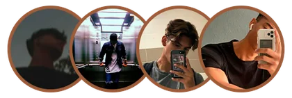

“Pá, já não sei o que fazer!
Passo MESES e até ANOS sem conseguir engatar uma única mulher. Acho que vou MORRER SOZINHO! Sou um gajo porreiro, mas sou LITERALMENTE invisível para elas.”
Esta foi uma mensagem de desespero que recebi de um rapaz que não conseguia envolver-se com mulher nenhuma, até que…
Partilhei com ele um…
CONTEÚDO SECRETO!
sobre aquilo que os homens SACANAS fazem para ter mulheres a correr desesperadas atrás deles!
Depois de pôr este conteúdo em prática, começou a conseguir envolver-se com pelo menos 3 MULHERES POR MÊS!
Olá, o meu nome é Leonor Ribeiro…
Nesta pequena carta vou ensinar-te como deixar de ser o “gajo porreiro” que provoca repulsa nas mulheres…
e tornares-te num homem
IRRESISTÍVEL
Despertando um DESEJO OBSESSIVO que as faz desejar-te como nunca desejaram um homem.
Deixando-as tão loucas ao ponto de serem submissas.
E só vais precisar de copiar algumas “características e atitudes” que os homens sacanas usam para as deixar viciadas neles.
E o melhor de tudo…
Estas características e atitudes são RIDICULAMENTE fáceis de aplicar!
Qualquer homem as pode aprender, mesmo com pouca ou nenhuma experiência com mulheres…
Isto mexe de forma PODEROSA com a mente de qualquer mulher…
Podendo fazer com que ela corra como uma idiota atrás de ti…
E fique louca para ABRIR AS PERNAS e sentir-te a PENETRÁ-LA…
Sei que isto parece uma loucura…
Mas é o que está a fazer com que vários gajos consigam as mulheres que querem…
Espreita algumas das mensagens que recebo de quem me acompanha e põe em prática o que ensino…
E a melhor parte disto tudo…
É que funciona mesmo que:
- Sejas tímido
- Te sintas inseguro
- Fiques ansioso
- Não tenhas experiência com mulheres
Nada disso importa!
Eu também era o “gajo porreiro” que não conseguia envolver-se com mulher nenhuma…
Fazia elogios, oferecia presentes, era romântico e atencioso, mas elas NUNCA me davam uma ÚNICA OPORTUNIDADE.
Passavam-se meses e meses até conseguir estar com uma rapariga…
E o pior de tudo: via sempre as mulheres a envolverem-se com uns gajos completamente idiotas…
HOMENS QUE NÃO FAZIAM NADA POR ELAS.
Na verdade, muitas vezes desprezavam essas mulheres…
E elas corriam atrás deles como loucas…
Isto deixava-me frustrado!
Enquanto eu fazia o maior esforço e não tinha uma ÚNICA OPORTUNIDADE…
Outros homens tinham várias mulheres que andavam LITERALMENTE a correr atrás deles…
SEM FAZEREM O MÍNIMO ESFORÇO!
Aquela situação deixava-me cada vez mais desanimado…
Até que tomei uma decisão!
Ia estudar o máximo que conseguisse.
Queria perceber o que estes homens tinham que as deixava loucas por eles…
Comecei a estudar comportamento masculino, biologia e psicologia sem parar…
Passava horas a ler livros e a pesquisar…
Até que, FINALMENTE, tudo mudou…
Percebi que havia um padrão comum entre estes homens…
Tinham certas CARACTERÍSTICAS e ATITUDES que mexem com o cérebro primitivo da mulher…
E isso provoca uma reação instintiva na mente dela…
E despertavam o…
DESEJO DE REPRODUÇÃO…
Que não é mais do que a vontade de TER SEXO com esses gajos…
É tão forte que nem elas próprias conseguem explicar porque ficam tão atraídas…
Só querem entregar-se completamente ao gajo…
Aceitando até ser SUBMISSAS porque têm MEDO de que eles as abandonem…
Quando percebi isto, tudo começou a fazer sentido…
Lembrei-me dos meus tempos de escola…
Os “gajos porreiros” da turma não tinham ninguém interessado neles…
Enquanto os mais malcomportados e idiotas as engatavam a todas…
E eu andava a agir de forma carinhosa, a ser generoso e a tentar agradar-lhes…
Quando, na verdade, isso provoca REPULSA nas mulheres…
Elas não gostam de homens que investem nelas!
Mas adoram homens com características e atitudes que mexem com o cérebro primitivo delas…
Mostrando que ele é um bom parceiro para a reprodução…
Infelizmente, muitos homens não têm este conhecimento…
Passam meses e até anos sem conseguirem envolver-se com uma mulher…
E, quando conseguem, acabam por se sentir frustrados a dada altura…
Tudo porque não conhecem estas características e atitudes que mexem com o cérebro delas…
Algo simples e rápido de aprender.
Custa-me saber que tantos homens passam pelo mesmo…
E foi isso que me deu vontade de ajudar o MÁXIMO de homens possível!
Por isso, decidi escrever o…
Onde te ensino como deixar de ser o “gajo porreiro” e tornares-te no “gajo irresistível” para elas…
Copiando e colando características e atitudes de homens que têm várias mulheres a correr como loucas atrás deles…
ALGO EXTREMAMENTE
FÁCIL E RÁPIDO DE APRENDER!
Mesmo que tenhas pouca ou nenhuma experiência com mulheres…
Mesmo que sejas tímido ou tenhas receio de meter conversa…
NÃO IMPORTA!
É só copiares e colares as características e atitudes que ensino e PRONTO!
QUERO SER UM SACANAVÊ O QUE VAIS APRENDER:
QUERO SER SACANAE MUITO MAIS…
Como podes ver, o conteúdo é extremamente poderoso e prático!
Além de ser SIMPLES e RÁPIDO de aplicar…
Espreita o tipo de testemunhos que recebo diariamente…
Vê também o que
acabaste de ganhar!
E-BOOK ATRAÇÃO
Aqui revelo todas as mentiras que te contaram sobre as mulheres e como nunca mais serás enganado por nenhuma delas…
Conseguiram retirar este e-book da internet e hoje já não o encontras online. Mas tu acabaste de ganhar acesso a ele gratuitamente!
Avaliado em: 17,00 €
ACABASTE DE O GANHAR DE GRAÇA!
AULA ESPECIAL:
Como Criar um Perfil do Caralho
Nesta aula vais aprender a criar um perfil de Instagram DO CARALHO! Usando vários gatilhos de curiosidade que mexem com a mente das mulheres.
Isto desperta nela o desejo de saber cada vez mais sobre ti, levando-a a investir emocionalmente e a ficar louca para te ver.
Avaliada em: 37,00 €
ACABASTE DE A GANHAR DE GRAÇA!
AUDIOLIVRO
Vive a experiência de ouvir todo o conteúdo através dos teus auscultadores enquanto fazes as tuas atividades ao longo do dia.
Absorve o conteúdo mesmo no trabalho, na faculdade, nos transportes ou onde quer que estejas.
Avaliado em: 27,00 €
ACABASTE DE O GANHAR DE GRAÇA!
Estes 3 bónus juntos custam 81,00 €…
Mas quem tem acesso ao e-book
leva tudo de graça!
QUERO SER UM SACANASó não consegues andar com mulheres porque não tens este conhecimento…
O que estás a fazer agora está a afastar cada vez mais as mulheres de ti…
Chegou a hora de tomares uma decisão!
Se queres continuar assim…
Ou copiar e colar as características e atitudes que os sacanas têm…
Para conseguires…
- Qualquer mulher que queiras
- Fazer com que elas corram atrás de ti
- Engatar mulheres todos os meses
- Deixar de ser “só amigo”
- Ser respeitado por elas e por toda a gente
Tudo isto por apenas…
De: 81,00 €
Por apenas:
19,90 €
QUERO COMPRAR COM DESCONTO- Sacana — Deixa de ser o «bom rapaz» e torna-te irresistível para elas
- Audiolivro Experience — Sacana
- Aula especial: Como Criar um Perfil do Caralho
- E-book Atração — A Verdade Revelada
- Acesso vitalício

Mais de 7.324 alunos!
★★★★★
É mais barato do que um lanche encomendado pela Uber Eats!
Só os bónus que acabaste de ganhar valem muito mais do que o preço de acesso ao e-book…
Confio tanto no conteúdo que te dou 15 dias de garantia…
Por isso, podes tomar a tua decisão sem correr risco nenhum…
Aproveita enquanto ainda mantenho este e-book disponível…